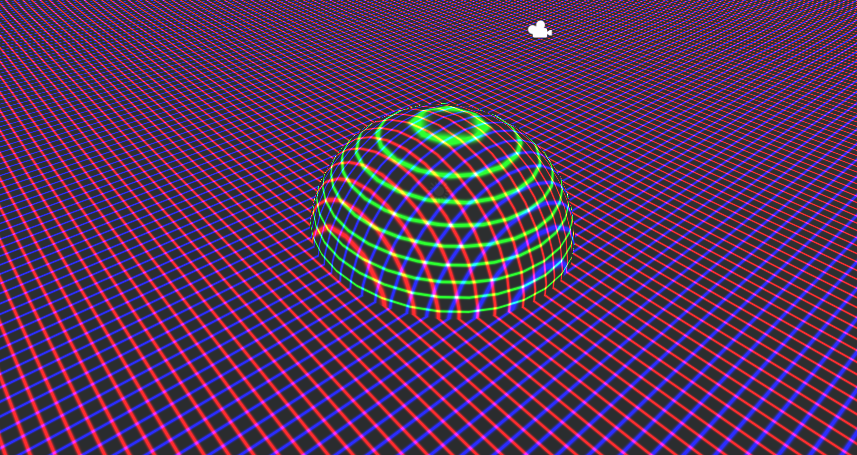
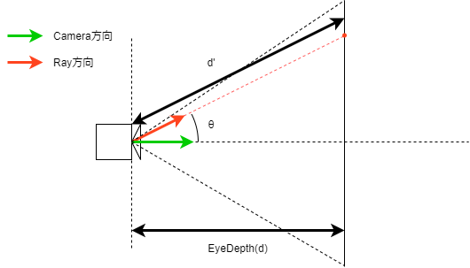

_CameraDepthTextureとscreenPosからワールド座標を復元する
_CameraDepthTextureとscreenPosからワールド座標を復元するシェーダーをサーフェイスシェーダーで実装した。VR環境でも問題なく動作する。

シェーダー全文
1 2 3 4 5 6 7 8 9 10 11 12 13 14 15 16 17 18 19 20 21 22 23 24 25 26 27 28 29 30 31 32 33 34 35 36 37 38 39 40 41 42 43 44 45 46 47 48 49 50 51 52 53 54 55 56 57 58 59 60 61 62 63 64 | Shader "Custom/WorldPosCalclate" { Properties { } SubShader { Tags { "RenderType" = "Transparent" "Queue" = "Transparent" } LOD 200 CGPROGRAM // Physically based Standard lighting model, and enable shadows on all light types #pragma surface surf Standard fullforwardshadows // Use shader model 3.0 target, to get nicer looking lighting #pragma target 3.0 #include "UnityCG.cginc" #include "UnityShaderVariables.cginc" struct Input { float3 worldPos; float4 screenPos; }; UNITY_DECLARE_DEPTH_TEXTURE(_CameraDepthTexture); // Add instancing support for this shader. You need to check 'Enable Instancing' on materials that use the shader. // See https://docs.unity3d.com/Manual/GPUInstancing.html for more information about instancing. // #pragma instancing_options assumeuniformscaling UNITY_INSTANCING_BUFFER_START(Props) // put more per-instance properties here UNITY_INSTANCING_BUFFER_END(Props) void surf (Input IN, inout SurfaceOutputStandard o) { float4 screenPos = float4(IN.screenPos.xyz, IN.screenPos.w + 0.00000000001); float4 screenPosNorm = screenPos / screenPos.w; screenPosNorm.z = (UNITY_NEAR_CLIP_VALUE >= 0) ? screenPosNorm.z : screenPosNorm.z * 0.5 + 0.5; float eyeDepth = LinearEyeDepth(SAMPLE_DEPTH_TEXTURE(_CameraDepthTexture, screenPosNorm.xy)); float3 cameraViewDir = -UNITY_MATRIX_V._m20_m21_m22; float3 worldViewDir = normalize(UnityWorldSpaceViewDir(IN.worldPos)); float3 wpos = ((eyeDepth * worldViewDir * (1.0 / dot(cameraViewDir, worldViewDir))) + _WorldSpaceCameraPos); // グリッド表示 { wpos *= 0.5f; o.Emission = pow(abs(cos(wpos.xyz * UNITY_PI * 4)), 20); } // Metallic and smoothness come from slider variables o.Metallic = 0; o.Smoothness = 0; o.Alpha = 1; } ENDCG } FallBack "Diffuse" } |
解説
スクリーン座標の正規化
サーフェイスシェーダーのinput構造体で入力されるfloat4 screenPosは、クリップ空間での座標が入っているので正規化する必要がある。screenPos.xyは0からwまでの範囲、screenPos.zはOpenGLなら-wからwまでの範囲になっている。そのためwで割って0から1に正規化する。wが0の時ゼロ除算が発生してしまうので非常に小さい値を足している。
1 2 | float4 screenPos = float4(IN.screenPos.xyz, IN.screenPos.w + 0.00000000001); float4 screenPosNorm = screenPos / screenPos.w; |
OpenGLならzは-1から1の範囲になるが、DirectXでは0から1なので、プラットフォーム差が発生してしまう。UNITY_NEAR_CLIP_VALUE >= 0 でOpenGL系かDirectX系か判定する。trueの時はDirectX系、falseの時はOpenGL系で、Zの値が0から1に統一される。
1 | screenPosNorm.z = (UNITY_NEAR_CLIP_VALUE >= 0) ? screenPosNorm.z : screenPosNorm.z * 0.5 + 0.5; |
_CameraDepthTextureからカメラからの距離を取得する
1 2 | // カメラからのDepthに変換する float eyeDepth = LinearEyeDepth(SAMPLE_DEPTH_TEXTURE(_CameraDepthTexture, ase_screenPosNorm.xy)); |
SAMPLE_DEPTH_TEXTURE(_CameraDepthTexture, ase_screenPosNorm.xy) でカメラのデプス情報を取得する。ただしこのままだとワールド空間でのスケールになっていないのでLinearEyeDepth()でカメラからのDepthに変換する。カメラからの距離というのはカメラ原点からの距離ではなく、カメラ平面からの距離であることに注意！
ワールド座標を計算する
ビュー変換行列からワールド空間でのカメラの向きを取得する。なぜこれで取れるかは付録で解説。
1 | float3 cameraViewDir = -UNITY_MATRIX_V._m20_m21_m22; |
UnityWorldSpaceViewDirで指定したワールド座標上の点に向かうベクトルを取得する。
1 | float3 worldViewDir = normalize(UnityWorldSpaceViewDir(IN.worldPos)); |
ワールド座標の計算。
1 | float3 wpos = ((eyeDepth * worldViewDir * (1.0 / dot(cameraViewDir, worldViewDir))) + _WorldSpaceCameraPos); |

dot(cameraViewDir, worldViewDir)はcameraViewDirとworldViewDirが単位ベクトルなので、なす角をとすると になる。worldViewDir を 、cameraViewDirを 、eyeDepth をとすると、
したがって、
でスクリーン座標におけるワールド座標を求めることができる。
【付録】 -UNITY_MATRIX_V._m20_m21_m22がカメラの向きになる理由
これを説明するにはビュー変換行列がどのように求められているか知る必要がある。
ビュー変換は以下の二つの変換を行っている
- ワールド座標系の座標軸をカメラの存在する位置へ平行移動する。
- 移動した座標軸を、カメラの向きに合わせて回転する。
まず1つめの変換行列は平行移動行列で求められる。カメラのワールド座標がとすると、
になる。
次に、カメラの向きを表す回転行列を考える。ここで元々のワールド座標系でのx軸の単位ベクトルからワールド座標系でのベクトルへ変換する行列を考えると、
となる。同様に、
したがって、これをすべて満たせる行列は
実際にはが新しいビュー座標系でのx軸の単位ベクトルとなる操作が欲しいので逆行列は、
したがってワールド座標系のベクトルからビュー座標系のベクトルを得るには、
よって、ビュー変換行列は
の第四列の各要素はの各行ベクトルの、、と、の列ベクトルとの内積ということになるので、
したがってUNITY_MATRIX_V._m20_m21_m22はになり、ワールド空間でのカメラのZ軸方向になる。さらに、カメラのZ軸はカメラの手前方向に伸びているので奥行方向にするために-1を掛けて、-UNITY_MATRIX_V._m20_m21_m22となる。